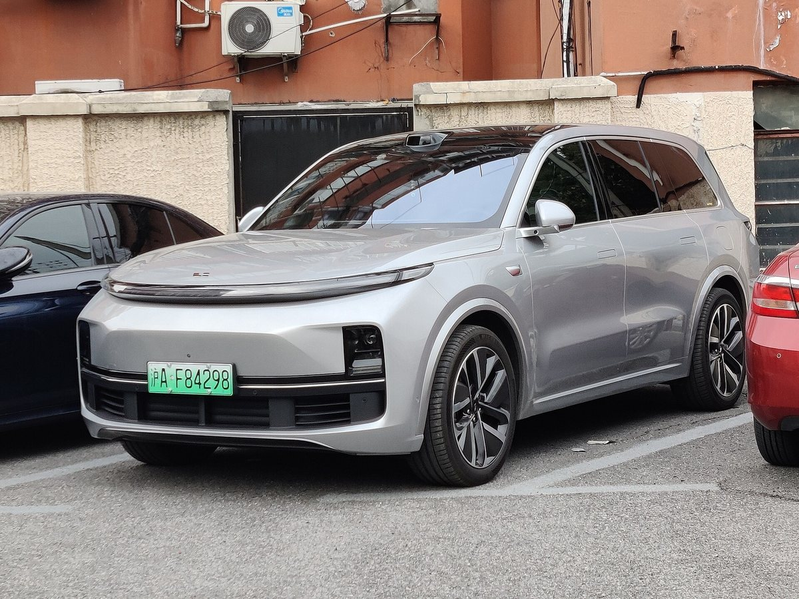

Лобовое стекло
От $280 «под ключ» с доставкой. С креплениями под камеры, жесткая упаковка.
Запчасти из Китая под заказ
Семейный EREV-кроссовер: электропривод плюс бензиновый генератор. А значит — и классическое ТО с маслом, и высоковольтные узлы. Привозим и то, и другое.
L7 ездит на электричестве, но бензиновый генератор требует регулярного ТО: масло, фильтры, свечи — даже если вы почти не слышите его работы. Версии Air, Pro и Max отличаются подвеской (у старших — пневматическая), поэтому ходовую подбираем строго по VIN. Лобовое стекло — наша якорная позиция: от $280 «под ключ».

От $280 «под ключ» с доставкой. С креплениями под камеры, жесткая упаковка.
Масло, масляный и воздушный фильтры, свечи — регламент никто не отменял.
2,5 тонны массы: тормоза изнашиваются быстрее, чем ожидают владельцы.
Для Pro/Max — стойки, баллоны и датчики высоты под вашу версию.
Фары, фонари, бамперы, крылья — с креплениями и фотоотчетом.
Опишите симптом своими словами — менеджер подскажет, какая деталь обычно нужна, и проверит по VIN.
Самое частое обращение по модели. Стекло от $280 «под ключ», едет авиа в жесткой упаковке.
Соберем комплект: масло + фильтры + свечи одной отправкой — дешевле по доставке.
Для версий с пневмо: баллон, стойка или датчик высоты. Подскажем, с чего начать.
Поведенные диски — типично для тяжелых авто. Диски + колодки комплектом.
Авиа — от $15,5/кг (от 30 кг — от $11,3/кг), море — от $5,6/кг (от 30 кг — от $2,5/кг). Цена включает доставку и растаможку, фиксируется до оплаты. Точную стоимость конкретной детали менеджер подтверждает после проверки VIN — до 30 минут в рабочее время.
Модель, VIN и что нужно — формой, в Telegram или по телефону.
Сверяем артикул и комплектацию в каталогах дилера в Китае.
Авиа или море, срок и финальная сумма «под ключ» — до оплаты.
Фотоотчет перед отправкой, трек-номер и статусы до получения.
L7 живет в двух мирах: электричество и ДВС-генератор. Мы возим и расходники для ТО, и высоковольтные узлы — один менеджер, один маршрут, одна цена «под ключ».
Да, у генератора собственный регламент по времени, а не только по пробегу. Масло и фильтры меняются регулярно.
Да, это наша якорная цена «под ключ» по L7 — с доставкой и растаможкой. Финальную сумму подтверждаем по VIN до оплаты.
Часть ходовой и ТО унифицирована, кузовные элементы разные. Сверяем по VIN конкретного авто.
Авиа — ориентировочно от 14 дней. Подскажем, можно ли временно ездить, в зависимости от симптома.